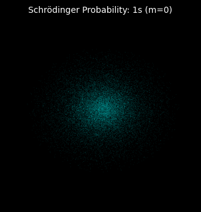

Single continuous path driven by fluid forces.
This is NOT a hardcoded shape or random Monte Carlo probability.
This generates a single continuous particle track over timesteps ($dt=0.05$).
Forces Computed per Step:
- Outward Wave Momentum: $E_n / r$
- Inward Casimir Crush: $K_{vac} / r^2$
- Transverse Fluid Pressure: $\nabla Y_l^m$
